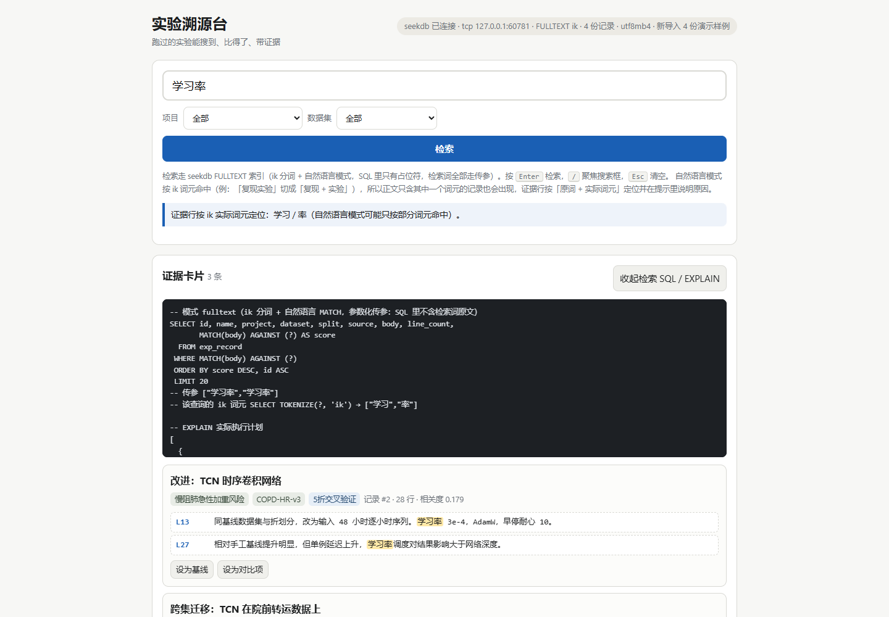
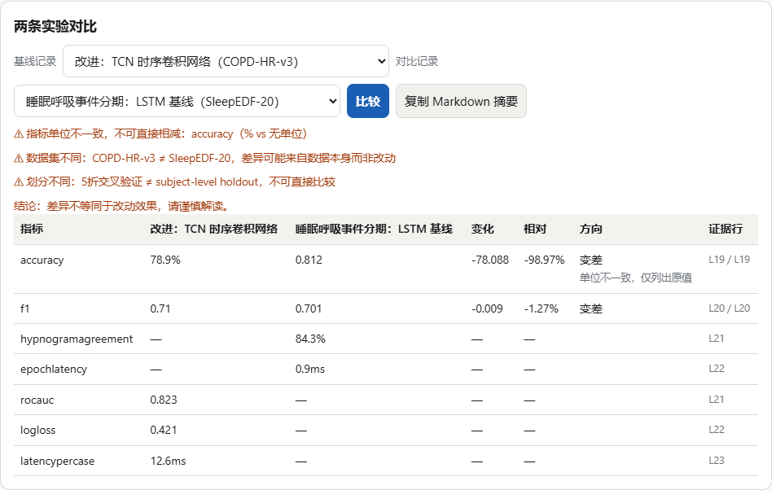

导入 + 指纹去重
解析实验名、项目、数据集、划分与指标表；对规范化正文取 sha256 指纹，同内容再导入只提示不新增副本。
2026 竞赛生态 · Qoder 参赛项目
实验跑过，原始条件、日志和指标却散在几十个 Markdown 里。
这里把它们收进一个本地 seekdb：搜得到、比得准、每条结论都能点开看到原文第几行。
acc=0.78，不记得是哪个数据集、哪种划分、哪版预处理。accuracy 单位是 %，另一个是 0–1 比例，直接相减得出错误结论。解析实验名、项目、数据集、划分与指标表；对规范化正文取 sha256 指纹，同内容再导入只提示不新增副本。
对 exp_record.body 建 FULLTEXT ... WITH PARSER ik 索引，自然语言模式 MATCH(body) AGAINST (?) 查中英文，支持项目 / 数据集筛选；检索 SQL、传参与 EXPLAIN（TEXT RETRIEVAL SCAN）一并可见，参数位不出现用户输入的原文。
每条命中展示原记录名、命中文段和原文行号；行号按「原词 + TOKENIZE(?, 'ik') 实际词元」定位（实机确认 复现实验 → 复现 + 实验），索引失配时给出明确提示与下一步建议。
选两条记录计算指标变化与相对变化；单位、数据集或划分不一致时判定为不可直接比较，并导出带行号引用的 Markdown 摘要。
技术栈：Node.js 22+（实机探针：Windows + Node 26，pnpm 10）· @oceanbase/seekdb-node 1.4.0（本地 seekdb 服务端，Windows/Linux）· mysql2 连接池 + 参数化 SQL · utf8mb4 表 + FULLTEXT ... WITH PARSER ik 自然语言模式检索 · 原生 HTML/CSS/JS 界面 · 无账号 / Docker / 模型 / API Key，SQL 侧身份 root@127.0.0.1，HTTP 只绑 127.0.0.1。
下面三段演示用的是交付目录 samples/ 的虚构演示样例，在浏览器里用子串匹配静态复现界面形态，方便直接查看结果长什么样：
这里的命中集合、行号与「score」都不等于真实索引的结果（真实检索按 ik 词元，命中的行也可能与关键词字面不同）。
现场导入与真实索引检索请在本地版执行（见「运行说明」），那里的命中结果、行号与 EXPLAIN 全部来自真实 seekdb 实例。
检索词保持 复现实验：选「全部」时命中现场导入的新记录，切到其它项目后该命中消失 —— 演示筛选条件如何收窄证据范围。
注意本页用子串匹配，因此只有原文含「复现实验」字面串的记录会命中；本地版按 ik 词元检索，只写「本次复现…」或只写「…实验设置」的记录同样可能命中，界面会说明原因。
摘要里的「第 N 行」就是本地版证据卡片给出的原文行号。
本地版使用 seekdb 1.4.0 检索下方的样例记录。点击图片可查看原图。


cd qoder
pnpm install # 或 npm install：seekdb-node 1.4.0 + mysql2 3.11.5
pnpm start # http://127.0.0.1:4321（seekdb memory_budget 取 2G）
pnpm test # 一次临时 seekdb 实例：导入 / 去重与事务 / 索引检索 / 词元 / 筛选 / 可比与不可比 / 重启持久化
pnpm run explain 复现实验 # 打印实际检索 SQL、传参、ik 词元与 EXPLAINWindows 与 Linux 命令一致；PowerShell 下换数据目录用 $env:EXPDB_HOME='D:\tmp\expdb'，
Linux 用 EXPDB_HOME=/tmp/expdb。详细参数与验收步骤见团队仓库的 qoder/README.md。
pnpm install 和 pnpm start，状态条显示 seekdb 连接通道、FULLTEXT ik 与 utf8mb4。点开「查看检索 SQL / EXPLAIN」查看实际执行计划。samples/02-改进-tcn.md，再点「再导入」按钮 → 出现指纹重复提示，库内不新增副本。学习率、accuracy；现场粘贴含 复现实验 与 RareKettle7 的新记录，导入后两条查询立即命中且计划为 TEXT RETRIEVAL SCAN；
SQL 面板同时列出该查询的 ik 词元（复现实验 → 复现 / 实验），证据行就是按这些词元定位的；切换项目筛选，该命中消失；空查询与失配词都给出明确提示。pnpm test 执行 26 项断言，将 SQL、参数及执行计划写入 docs/seekdb-evidence.md。